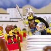
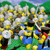

|
|
|
2 Samuel 5
|
David Becomes King of Israel
|
| 5:1
Then came all the tribes of Israel to David unto Hebron, and spake,
saying, Behold, we are thy bone and thy flesh.
|
| 5:2
Also in time past, when Saul was king over us, thou wast he that leddest
out and broughtest in Israel: and the LORD said to thee, Thou shalt feed my
people Israel, and thou shalt be a captain over Israel. |
 (5:4) "He reigned forty years." (5:4) "He reigned forty years."
When did Absalom rebel against David?
David Conquers the Blind and Lame
|
| 5:3
So all the elders of Israel came to the king to Hebron; and king David
made a league with them in Hebron before the LORD: and they anointed David
king over Israel.
|
| 5:4
David was thirty years old when he began to reign, and he reigned forty
years.
|
| 5:5
In Hebron he reigned over Judah seven years and six months: and in
Jerusalem he reigned thirty and three years over all Israel and Judah. |

 (5:8) (5:8)
"David said ... whosoever ... smiteth ... the lame and the blind
that are hated of David's soul, he shall be chief and captain."
Whoever kills the lame and the blind will be David's "chief and captain."
What the Bible says about blind people
(5:10)
"David ... grew great, and the LORD God of hosts was with him."


 (5:13) (5:13)
"And David took him more concubines and
wives."
(5:14-16)
"These be the names of those that were born unto him in
Jerusalem."
Who were David's sons?
David Impregnates More Women
|
| 5:6
And the king and his men went to Jerusalem unto the Jebusites, the
inhabitants of the land: which spake unto David, saying, Except thou take
away the blind and the lame, thou shalt not come in hither: thinking, David
cannot come in hither.
|
| 5:7
Nevertheless David took the strong hold of Zion: the same is the city of
David.
|
| 5:8
And David said on that
day, Whosoever getteth up to the gutter, and smiteth the
Jebusites, and the lame and the blind that are hated of David's soul, he
shall be chief and captain. Wherefore they said, The blind and the
lame shall not come into the house.
|
| 5:9
So David dwelt in the fort, and called it the city of David. And David
built round about from Millo and inward.
|
| 5:10
And David went on, and
grew great, and the LORD God of hosts was with him.
|
| 5:11
And Hiram king of Tyre sent messengers to David, and cedar trees, and
carpenters, and masons: and they built David an house.
|
| 5:12
And David perceived that the LORD had established him king over Israel,
and that he had exalted his kingdom for his people Israel's sake.
|
| 5:13
And David took him more
concubines and wives out of Jerusalem, after he was come from Hebron:
and there were yet sons and daughters born to David.
|
| 5:14
And these be the names
of those that were born unto him in Jerusalem; Shammuah, and Shobab, and
Nathan, and Solomon,
|
| 5:15
Ibhar also, and Elishua,
and Nepheg, and Japhia, |
 (5:19-25) David asks God if he should kill some more
Philistines. God says yes, and he'll even help. (5:19-25) David asks God if he should kill some more
Philistines. God says yes, and he'll even help.
God's 76th Killing
(5:19) "David enquired of
the LORD, saying, Shall I go up to the Philistines? wilt thou deliver them
into mine hand? And the LORD said unto David, Go up: for I will doubtless
deliver the Philistines into thine hand."
(5:20)
"David smote them there, and said, The LORD hath broken forth upon mine enemies before me."
(5:21) "They left their images, and David and his men burned them."
 (5:23) "When David enquired of the LORD, he said ... come upon them over against the mulberry trees." (5:23) "When David enquired of the LORD, he said ... come upon them over against the mulberry trees."
(5:24) "When thou hearest the sound of a going in the tops of the mulberry trees ... then shall the LORD go out before thee,
to smite the host of the Philistines."
(5:25) "And David did so, as the LORD had commanded him; and smote the Philistines."
God Demands War with Philistines
|
| 5:16
And Elishama, and Eliada,
and Eliphalet.
|
| 5:17
But when the Philistines heard that they had anointed David king over
Israel, all the Philistines came up to seek David; and David heard of it,
and went down to the hold.
|
| 5:18
The Philistines also came and spread themselves in the valley of Rephaim.
|
| 5:19
And David enquired of
the LORD, saying, Shall I go up to the Philistines? wilt thou deliver them
into mine hand? And the LORD said unto David, Go up: for I will doubtless
deliver the Philistines into thine hand.
|
| 5:20
And David came to Baalperazim, and David smote them there, and said, The
LORD hath broken forth upon mine enemies before me, as the breach of waters.
Therefore he called the name of that place Baalperazim.
|
| 5:21
And there they left their images, and David and his men burned them.
|
| 5:22
And the Philistines came up yet again, and spread themselves in the valley
of Rephaim.
|
| 5:23
And when David enquired of the LORD, he said, Thou shalt not go up; but
fetch a compass behind them, and come upon them over against the mulberry
trees.
|
| 5:24
And let it be, when thou hearest the sound of a going in the tops of the
mulberry trees, that then thou shalt bestir thyself: for then shall the LORD
go out before thee, to smite the host of the Philistines.
|
| 5:25
And David did so, as
the LORD had commanded him; and smote the Philistines from Geba
until thou come to Gazer.
|
|